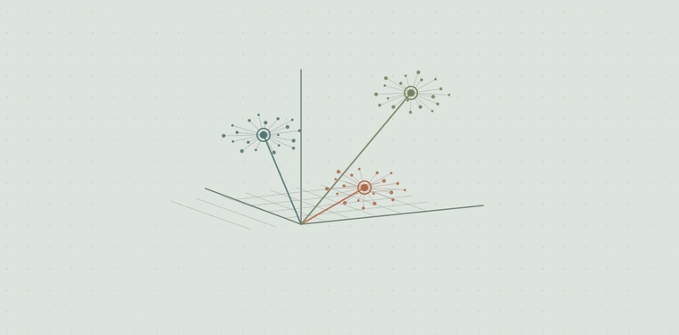

把一句评论拆成训练样本
词向量笔记先清理评论列的标点，再交给 jieba 切分。假设一行分成「餐厅／环境／安静」，窗口半径取 1。以「环境」作为中心，Skip-gram 可以分别构造「环境→餐厅」和「环境→安静」两个预测任务。CBOW 则把两侧的词合在一起，预测「环境」。
仓库的 Gensim 笔记用 sg=1，向量维度为 300，最大窗口为 5，出现次数少于 3 的词不进入模型。相邻脚本 6.2.4.py 把 sg 改成 0，使用 CBOW。比较两种模型前先检查目标词是否进词表，低频词被过滤时，查询失败与它的语义没有关系。
翻开嵌入矩阵看一次预测
仓库另用 PyTorch 写了一个小说语料的 CBOWClassifier。它按数据表中的 context 和 target 取样，把上下文词编号映射到 50 维向量，沿词的位置求和，经过 dropout 和线性层，输出对整个词表的分数。交叉熵用真实中心词的编号监督这一步。
把两个上下文词对调，在相同嵌入权重下，进入 dropout 前的向量和完全相同。这个小实验揭示了此处词袋表示丢掉的顺序信息，也解释了为什么它能学到常见搭配，却无法仅靠这一步区分谁修饰谁。
用近邻检查语料留下的痕迹
Gensim 笔记比较「好吃」与「美味」等词，还用 most_similar 做向量加减。返回值是这份评论语料中方向相近的向量。PyTorch 示例的近邻函数则按欧氏距离排序。比较榜单前应统一查询词、距离定义和语料。
还可以给 PyTorch 的排序函数一个纸上用例。假设排除查询词后，距离为 0.1、0.3、0.9。源码随后从排序结果的下标 1 开始切片，最接近的 0.1 会被跳过。检查首个结果和返回数量，比直接解释榜单中的词更稳妥。
源码与参考资料
- dev_skills · 评论语料与 Skip-gram
- dev_skills · 评论语料的 CBOW
- dev_skills · PyTorch CBOW 与近邻检索
- Gensim · Word2Vec 参数与查询
相关项目自然语言处理实验